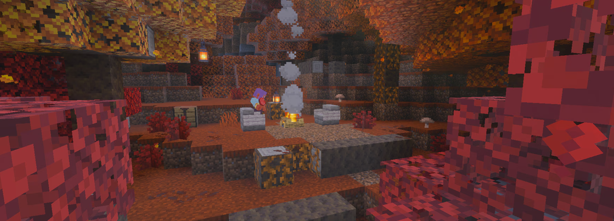
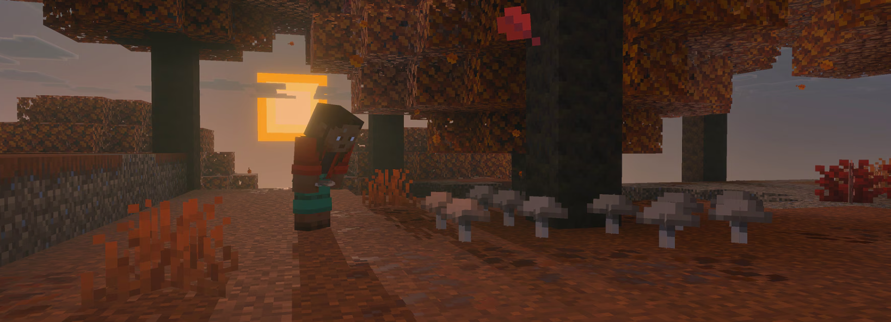
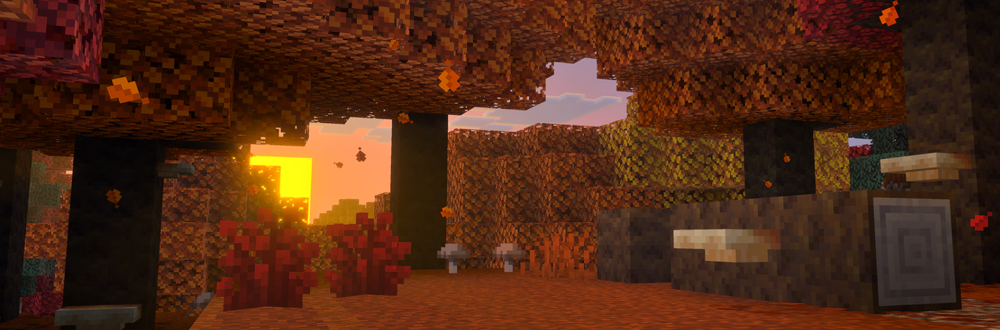
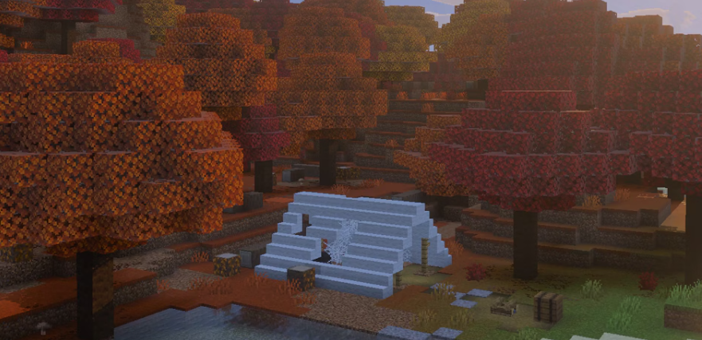
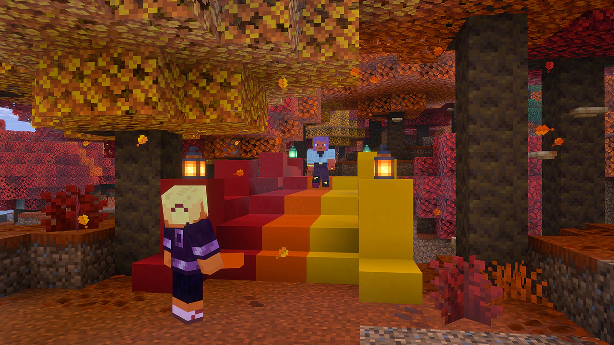
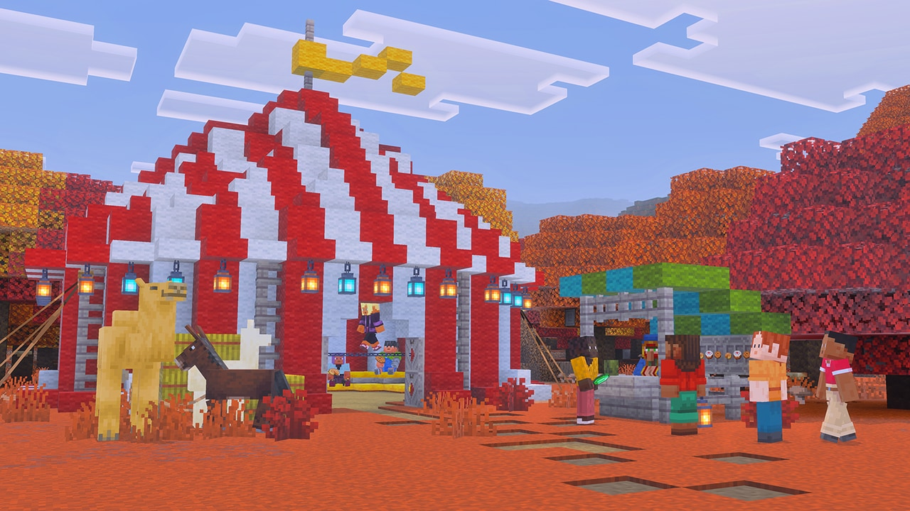

La nueva version "Wilderness Bound" ha llegado

¡Abróchense los cinturones para un anuncio muy especial! Mojang acaba de revelar oficialmente la próxima gran actualización de Minecraft:
¡Wilderness Bound!. Ve bien equipado. Explora sin miedo. ¡Emprende una expedición hacia la naturaleza salvaje!
Wilderness Bound es una actualización de juego de Minecraft que se centra en exploración al aire libre, la construcción y el juego de aventuras.
Presenta el bioma de bosque moteado, campamentos abandonados, madera de álamo, nuevos bloques de construcción, camas de paja,
cojines, hongos de repisa y mapas de aventura.
Fecha oficial de Wilderness Bound
Mounts of Mayhem finalmente tiene fecha oficial en Minecraft. , por lo que ya se encuentra disponible para descargar y jugar en tus dispositivos.
- Lanzamiento: Disponible a partir del 15 de septiembre de 2026.
- Contenido: Nuevo bioma, Estructuras, Bloques y decoración y Mapas mejorados.

Nuevos bloques por descubrir
- Álamos: Los álamos dan al bosque moteado un ambiente cálido y una atmósfera acogedora.
Tala álamos para obtener madera de álamo, un nuevo bloque que puedes usar para fabricar un conjunto completo.
- Arbusto rojo: Este arbusto de vivos colores crece en el bosque moteado, pero conserva su color rojo aunque lo coloques en otro bioma,
por lo que es perfecto para decorar.
- Hongos de repisa: Esta espora sirve para mucho más que decorar: ¡puedes usarla para impulsarte al hacer parkour o como ingrediente para un guiso!
Usa polvo de hueso en un pequeño hongo de repisa para que crezca y se convierta en uno grande.

Busca el campamento abandonado
El campamento abandonado es una nueva estructura misteriosa que puedes encontrar en los bosques moteados y otros biomas. Una tienda
de campaña vacía y una hoguera son los únicos signos de vida. Si contar el botín que han dejado atrás... ¿Te cobijarás en su refugio o estarás
demasiado pendiente de averiguar quién lo abandonó?

Cojines
Encuentra un cojín en un campamento abandonado o fabrica uno con 3 losas de lana del mismo color. ¡Conviértelos en cómodos sillones,
sofás modernos o en cualquier mueble que puedas imaginar!

Cama de paja
Encuentra o fabrica una cama de paja con 3 balas de heno, duerme toda la noche y despertarás cuando
los horrores hayan desaparecido. ¡No olvides que las camas de paja se pueden consumir y no restablecen tu punto de aparición!

Conjunto ampliado de bloques de hormigón
Sube de nivel tu juego de construcciones con dos novedades de hormigón: ¡escaleras y losas! Fabrícalas con bloques de
hormigón de cualquiera de los 16 colores. Para conseguir hormigón, basta con colocar bloques de polvo de hormigón junto al agua para que se solidifiquen.

Bloques y escaleras de lana
Nuestro conjunto de bloques de lana más suave incorpora dos novedades: ¡escaleras y losas! Fabrícalas en cualquiera de los
16 colores para añadir formas más suaves, texturas en capas y detalles creativos a todo tipo de construcciones, desde muebles personalizados
hasta acogedores refugios para las noches frías en plena naturaleza.

Mapas de campos abandonados
¡El misterio en torno al campamento abandonado es cada vez más intrigante! Parece que alguien ha dejado algunos mapas de
aventuras en los cofres (¡que además tienen un aspecto nuevo y mejorado!). Encuentra estos mapas y te llevarán a otros
campos abandonados y estructuras de la Superficie!

Fecha de salida de la versión "Wilderness Bound"
15/Septiembre/2026.